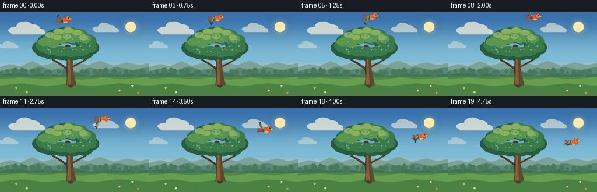
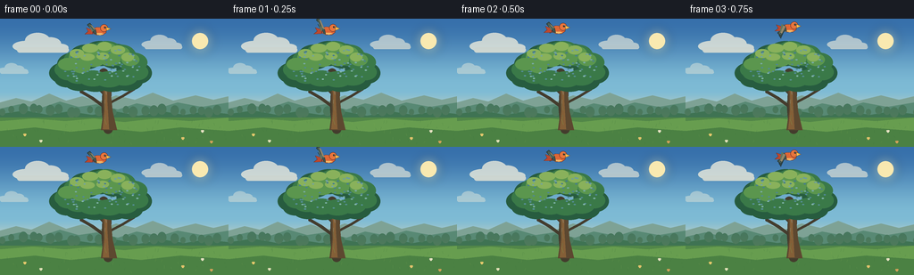

CODING AGENTS AS PIXEL WORLD MODELS
traex/DeepSeek-V4.1-Flash · dynamic_spatial_relationship_0045
点击播放 · 原生 RGB 像素
逐轮保存的候选
回放视频、检查图与代码变化。
每份候选均可单独播放。实际图片检查记录在下方工具轨迹中。
候选 01播放与检查图
点击播放 · 原生 RGB 像素


展开代码变化
--- 上一保存版本
+++ 本次保存版本
@@ -0,0 +1,403 @@
+from __future__ import annotations
+
+import math
+from pathlib import Path
+
+import numpy as np
+from PIL import Image, ImageDraw, ImageFilter
+
+import artifact_io
+
+
+WIDTH = 256
+HEIGHT = 144
+SCALE = 4
+FRAMES = 20
+FPS = 4.0
+
+
+def s(value: float) -> int:
+ return int(round(value * SCALE))
+
+
+def pts(values):
+ return [(s(x), s(y)) for x, y in values]
+
+
+def gradient_canvas():
+ top = np.array([55, 112, 171], dtype=np.float32)
+ middle = np.array([126, 187, 213], dtype=np.float32)
+ horizon = np.array([229, 221, 183], dtype=np.float32)
+ rows = np.empty((s(116), s(WIDTH), 3), dtype=np.uint8)
+ for y in range(rows.shape[0]):
+ t = y / max(1, rows.shape[0] - 1)
+ if t < 0.68:
+ u = t / 0.68
+ u = u * u * (3.0 - 2.0 * u)
+ color = top * (1.0 - u) + middle * u
+ else:
+ u = (t - 0.68) / 0.32
+ u = u * u * (3.0 - 2.0 * u)
+ color = middle * (1.0 - u) + horizon * u
+ rows[y, :, :] = np.clip(color, 0, 255).astype(np.uint8)
+ canvas = Image.new("RGB", (s(WIDTH), s(HEIGHT)), (229, 221, 183))
+ canvas.paste(Image.fromarray(rows, "RGB"), (0, 0))
+ return canvas
+
+
+def soft_glow(canvas, center, radius, color):
+ layer = Image.new("RGBA", canvas.size, (0, 0, 0, 0))
+ draw = ImageDraw.Draw(layer)
+ x, y = center
+ for fraction, alpha in ((1.0, 24), (0.75, 38), (0.48, 60)):
+ r = radius * fraction
+ draw.ellipse((s(x - r), s(y - r), s(x + r), s(y + r)), fill=(*color, alpha))
+ layer = layer.filter(ImageFilter.GaussianBlur(s(4.5)))
+ canvas.alpha_composite(layer)
+
+
+def ellipse(draw, box, fill, outline=None, width=1):
+ draw.ellipse(tuple(s(v) for v in box), fill=fill, outline=outline, width=s(width) if outline else 1)
+
+
+def draw_cloud(layer, x, y, scale, opacity):
+ draw = ImageDraw.Draw(layer)
+ shadow = (94, 150, 169, int(28 * opacity))
+ white = (255, 247, 224, int(212 * opacity))
+ warm = (248, 239, 216, int(222 * opacity))
+ blobs = [
+ (x - 18 * scale, y + 1 * scale, 17 * scale, 7 * scale),
+ (x - 6 * scale, y - 5 * scale, 15 * scale, 10 * scale),
+ (x + 8 * scale, y - 2 * scale, 13 * scale, 8 * scale),
+ (x + 19 * scale, y + 2 * scale, 10 * scale, 5 * scale),
+ ]
+ for bx, by, rx, ry in blobs:
+ draw.ellipse(
+ (s(bx - rx), s(by - ry), s(bx + rx), s(by + ry)),
+ fill=shadow,
+ )
+ for bx, by, rx, ry in blobs:
+ draw.ellipse(
+ (s(bx - rx * 0.94), s(by - ry * 1.02), s(bx + rx * 0.94), s(by + ry * 0.72)),
+ fill=white,
+ )
+ draw.rounded_rectangle(
+ (s(x - 29 * scale), s(y + 1 * scale), s(x + 29 * scale), s(y + 7 * scale)),
+ radius=s(3 * scale),
+ fill=warm,
+ )
+
+
+def draw_landscape(canvas):
+ layer = Image.new("RGBA", canvas.size, (0, 0, 0, 0))
+ draw = ImageDraw.Draw(layer)
+
+ # Far blue-green ridges and a warm, hazy valley.
+ draw.polygon(
+ pts([(0, 94), (18, 89), (35, 93), (55, 84), (74, 92), (92, 87),
+ (111, 93), (130, 86), (151, 91), (171, 83), (194, 92),
+ (219, 86), (239, 91), (256, 87), (256, 116), (0, 116)]),
+ fill=(126, 162, 149, 255),
+ )
+ draw.polygon(
+ pts([(0, 101), (22, 96), (43, 101), (67, 93), (88, 99), (108, 96),
+ (132, 102), (153, 95), (179, 100), (199, 94), (226, 99),
+ (256, 94), (256, 116), (0, 116)]),
+ fill=(88, 137, 116, 255),
+ )
+ draw.polygon(
+ pts([(0, 107), (28, 103), (54, 108), (77, 104), (103, 108),
+ (129, 104), (155, 109), (182, 104), (207, 108), (230, 104),
+ (256, 107), (256, 116), (0, 116)]),
+ fill=(63, 115, 83, 255),
+ )
+
+ # Meadow bands, with a sun-warmed strip near the horizon.
+ draw.rectangle((0, s(111), s(WIDTH), s(144)), fill=(82, 135, 72, 255))
+ draw.polygon(
+ pts([(0, 115), (37, 112), (73, 115), (105, 112), (139, 116),
+ (175, 112), (213, 115), (256, 111), (256, 144), (0, 144)]),
+ fill=(103, 157, 79, 255),
+ )
+ draw.polygon(
+ pts([(0, 126), (39, 122), (79, 127), (118, 123), (158, 127),
+ (202, 122), (256, 126), (256, 144), (0, 144)]),
+ fill=(75, 129, 67, 255),
+ )
+
+ # Soft distant tree line.
+ rng = np.random.default_rng(12)
+ for i in range(25):
+ x = 4 + i * 10.5 + rng.uniform(-3.0, 3.0)
+ y = 102 + rng.uniform(-2.5, 2.5)
+ r = 3.8 + rng.uniform(-1.1, 1.4)
+ draw.ellipse((s(x - r), s(y - r), s(x + r), s(y + r * 1.4)),
+ fill=(51, 103, 74, 215))
+
+ canvas.alpha_composite(layer)
+
+ # Fine grass and flowers keep the foreground from feeling empty.
+ detail = Image.new("RGBA", canvas.size, (0, 0, 0, 0))
+ dd = ImageDraw.Draw(detail)
+ for i in range(80):
+ x = rng.uniform(1, 255)
+ y = rng.uniform(116, 142)
+ length = rng.uniform(1.5, 4.0)
+ lean = rng.uniform(-1.2, 1.2)
+ shade = (58, 112, 57, 110) if i % 3 else (132, 169, 83, 100)
+ dd.line((s(x), s(y), s(x + lean), s(y - length)), fill=shade, width=max(1, s(0.35)))
+ for x, y, color in [
+ (27, 130, (247, 209, 113)),
+ (45, 137, (242, 234, 197)),
+ (204, 134, (244, 201, 112)),
+ (226, 126, (250, 238, 211)),
+ (236, 138, (224, 164, 92)),
+ ]:
+ dd.line((s(x), s(y + 3), s(x), s(y)), fill=(57, 113, 62, 190), width=s(0.35))
+ for dx, dy in ((0, 0), (1.5, 0), (0.75, 1.1)):
+ dd.ellipse((s(x + dx - 1.1), s(y + dy - 0.9), s(x + dx + 1.1), s(y + dy + 0.9)),
+ fill=(*color, 230))
+ canvas.alpha_composite(detail)
+
+
+def draw_branch(draw, points, width, color, highlight=None):
+ draw.line(points, fill=color, width=s(width), joint="curve")
+ radius = width / 2
+ for x, y in (points[0], points[-1]):
+ draw.ellipse((x - s(radius), y - s(radius), x + s(radius), y + s(radius)), fill=color)
+ if highlight:
+ offset = s(0.8)
+ draw.line([(x - offset, y) for x, y in points], fill=highlight, width=max(1, s(width * 0.18)))
+
+
+def draw_tree(canvas):
+ layer = Image.new("RGBA", canvas.size, (0, 0, 0, 0))
+ draw = ImageDraw.Draw(layer)
+
+ # Branch silhouette first, with the canopy overlapping its ends.
+ dark = (68, 60, 45, 255)
+ mid = (93, 72, 48, 255)
+ warm = (132, 95, 55, 255)
+ draw_branch(draw, pts([(121, 124), (119, 101), (120, 78), (116, 61)]), 10.5, dark)
+ draw_branch(draw, pts([(120, 86), (107, 73), (96, 60)]), 6.2, dark)
+ draw_branch(draw, pts([(121, 80), (133, 70), (145, 57)]), 5.4, dark)
+ draw_branch(draw, pts([(118, 100), (103, 89), (91, 82)]), 3.4, dark)
+ draw_branch(draw, pts([(120, 96), (137, 87), (150, 79)]), 3.0, dark)
+
+ draw.polygon(
+ pts([(113, 125), (116, 103), (115, 84), (113, 66), (117, 60),
+ (123, 61), (124, 83), (126, 104), (131, 125)]),
+ fill=mid,
+ )
+ draw.polygon(
+ pts([(115, 124), (117, 104), (117, 85), (115, 67), (118, 64),
+ (120, 68), (120, 92), (122, 124)]),
+ fill=warm,
+ )
+ for y0, y1, bend in [(91, 103, -1.4), (73, 85, 1.0), (108, 119, -0.6)]:
+ draw.line(
+ pts([(119 + bend, y0), (117.5 + bend * 0.4, (y0 + y1) / 2), (119, y1)]),
+ fill=(153, 108, 58, 135),
+ width=max(1, s(0.55)),
+ )
+
+ # Layered crown: a dark mass, mid-green leaves, then warm top-left light.
+ dark_leaves = [
+ (72, 61, 17, 12), (82, 51, 18, 13), (96, 43, 19, 14),
+ (112, 39, 20, 14), (129, 42, 19, 14), (145, 50, 18, 13),
+ (155, 61, 15, 12), (143, 70, 17, 11), (126, 72, 18, 10),
+ (107, 72, 18, 10), (89, 70, 18, 11), (75, 68, 14, 9),
+ ]
+ for cx, cy, rx, ry in dark_leaves:
+ draw.ellipse((s(cx - rx), s(cy - ry), s(cx + rx), s(cy + ry)),
+ fill=(39, 92, 63, 255))
+
+ mid_leaves = [
+ (76, 57, 15, 10), (88, 47, 17, 12), (103, 40, 17, 12),
+ (119, 37, 18, 12), (135, 41, 17, 12), (149, 49, 16, 11),
+ (154, 60, 12, 9), (139, 66, 15, 9), (122, 68, 16, 9),
+ (104, 67, 16, 9), (88, 64, 15, 9), (76, 61, 12, 8),
+ ]
+ for cx, cy, rx, ry in mid_leaves:
+ draw.ellipse((s(cx - rx), s(cy - ry), s(cx + rx), s(cy + ry)),
+ fill=(58, 121, 72, 255))
+
+ light_leaves = [
+ (76, 51, 11, 7), (89, 43, 12, 8), (104, 37, 12, 8),
+ (119, 34, 12, 7), (134, 38, 11, 7), (146, 46, 10, 7),
+ (105, 47, 12, 7), (123, 46, 12, 7), (91, 55, 10, 6),
+ ]
+ for cx, cy, rx, ry in light_leaves:
+ draw.ellipse((s(cx - rx), s(cy - ry), s(cx + rx), s(cy + ry)),
+ fill=(91, 150, 78, 255))
+
+ highlight_leaves = [
+ (86, 39, 8, 5), (101, 33, 9, 5), (117, 31, 8, 5),
+ (132, 35, 8, 5), (143, 43, 7, 5), (98, 43, 8, 4),
+ (115, 42, 7, 4),
+ ]
+ for cx, cy, rx, ry in highlight_leaves:
+ draw.ellipse((s(cx - rx), s(cy - ry), s(cx + rx), s(cy + ry)),
+ fill=(137, 177, 91, 255))
+
+ # Sparse leaf marks give the crown a hand-painted texture.
+ rng = np.random.default_rng(44)
+ for _ in range(75):
+ cx = rng.uniform(69, 158)
+ cy = rng.uniform(34, 70)
+ dx = (cx - 113) / 46
+ dy = (cy - 53) / 23
+ if dx * dx + dy * dy > 1:
+ continue
+ color = (32, 80, 56, 95) if rng.random() < 0.52 else (155, 186, 99, 85)
+ draw.ellipse((s(cx - 1.2), s(cy - 0.7), s(cx + 1.2), s(cy + 0.7)), fill=color)
+
+ canvas.alpha_composite(layer)
+
+
+def bird_point(x, y, angle, local_x, local_y):
+ ca, sa = math.cos(angle), math.sin(angle)
+ return (
+ s(x + local_x * ca - local_y * sa),
+ s(y + local_x * sa + local_y * ca),
+ )
+
+
+def bird_polygon(draw, x, y, angle, points, fill, outline=None, width=0.5):
+ poly = [bird_point(x, y, angle, px, py) for px, py in points]
+ draw.polygon(poly, fill=fill)
+ if outline:
+ draw.line(poly + [poly[0]], fill=outline, width=max(1, s(width)), joint="curve")
+
+
+def draw_bird(canvas, x, y, flap, angle):
+ layer = Image.new("RGBA", canvas.size, (0, 0, 0, 0))
+ draw = ImageDraw.Draw(layer)
+
+ # The far wing uses a restrained, darker palette and trails the near wing.
+ far_tip_y = -9.5 * math.sin(flap + 0.55)
+ far_wing = [
+ (-2.5, -1.0), (-6.0, -2.0), (-10.5, far_tip_y),
+ (-8.4, far_tip_y + 3.5), (-4.3, 1.8),
+ ]
+ bird_polygon(draw, x, y, angle, far_wing, (52, 75, 78, 255), (31, 50, 55, 255), 0.45)
+
+ # Forked tail.
+ bird_polygon(
+ draw, x, y, angle,
+ [(-6.0, -1.8), (-13.5, -4.3), (-11.4, -0.3), (-15.0, 2.7),
+ (-6.3, 2.4)],
+ (188, 72, 47, 255), (109, 50, 43, 255), 0.5,
+ )
+
+ # Body and cream underside.
+ body = [(-6.2, -3.3), (-2.0, -5.2), (4.0, -4.7), (8.1, -2.2),
+ (8.7, 1.4), (5.0, 4.0), (-1.8, 4.0), (-5.5, 2.2)]
+ bird_polygon(draw, x, y, angle, body, (222, 103, 54, 255), (101, 48, 43, 255), 0.6)
+ bird_polygon(
+ draw, x, y, angle,
+ [(-3.2, 1.5), (3.6, 1.8), (6.1, 3.0), (1.8, 4.1), (-3.6, 3.0)],
+ (244, 180, 99, 255),
+ )
+
+ # Head, beak, and eye.
+ head_center = bird_point(x, y, angle, 6.6, -3.6)
+ head_r = s(4.25)
+ draw.ellipse(
+ (head_center[0] - head_r, head_center[1] - head_r,
+ head_center[0] + head_r, head_center[1] + head_r),
+ fill=(232, 117, 60, 255), outline=(101, 48, 43, 255), width=max(1, s(0.55)),
+ )
+ bird_polygon(
+ draw, x, y, angle,
+ [(9.2, -5.0), (14.3, -2.8), (9.3, -0.6)],
+ (250, 188, 75, 255), (128, 82, 42, 255), 0.45,
+ )
+ eye = bird_point(x, y, angle, 7.6, -4.5)
+ draw.ellipse((eye[0] - s(0.9), eye[1] - s(0.9), eye[0] + s(0.9), eye[1] + s(0.9)),
+ fill=(30, 39, 40, 255))
+ eye_glint = bird_point(x, y, angle, 7.9, -4.8)
+ draw.ellipse((eye_glint[0] - s(0.25), eye_glint[1] - s(0.25),
+ eye_glint[0] + s(0.25), eye_glint[1] + s(0.25)), fill=(255, 247, 216, 255))
+
+ # Near wing: a broad blade with two feather separations.
+ tip_y = -13.0 * math.sin(flap)
+ near_wing = [
+ (-3.0, -2.0), (-5.0, -4.0), (-9.3, tip_y - 1.8),
+ (-12.0, tip_y), (-8.6, tip_y + 3.6), (-4.0, 2.2), (-2.0, 3.0),
+ ]
+ bird_polygon(draw, x, y, angle, near_wing, (71, 91, 83, 255), (40, 58, 59, 255), 0.65)
+ bird_polygon(
+ draw, x, y, angle,
+ [(-3.7, -2.5), (-7.3, -5.3), (-10.1, tip_y + 0.8), (-7.0, 0.2)],
+ (99, 117, 93, 255),
+ )
+ feather_a = [bird_point(x, y, angle, px, py) for px, py in [(-3.7, -0.1), (-9.0, tip_y + 1.3)]]
+ feather_b = [bird_point(x, y, angle, px, py) for px, py in [(-4.2, 1.3), (-7.9, tip_y + 2.6)]]
+ draw.line(feather_a, fill=(42, 65, 64, 210), width=max(1, s(0.45)))
+ draw.line(feather_b, fill=(42, 65, 64, 190), width=max(1, s(0.35)))
+
+ # A tiny warm rim on the leading edge helps the bird read against the sky.
+ bird_polygon(
+ draw, x, y, angle,
+ [(-3.1, -2.3), (-5.4, -3.6), (-8.9, tip_y - 0.2), (-7.2, tip_y + 0.8)],
+ (179, 141, 81, 190),
+ )
+ canvas.alpha_composite(layer)
+
+
+def bezier(t, p0, p1, p2, p3):
+ u = 1.0 - t
+ return (
+ u ** 3 * p0[0] + 3 * u * u * t * p1[0] + 3 * u * t * t * p2[0] + t ** 3 * p3[0],
+ u ** 3 * p0[1] + 3 * u * u * t * p1[1] + 3 * u * t * t * p2[1] + t ** 3 * p3[1],
+ )
+
+
+def make_frames():
+ base = gradient_canvas().convert("RGBA")
+ soft_glow(base, (224, 25), 17, (255, 229, 150))
+ sun = Image.new("RGBA", base.size, (0, 0, 0, 0))
+ sun_draw = ImageDraw.Draw(sun)
+ sun_draw.ellipse((s(215), s(16), s(233), s(34)), fill=(255, 236, 176, 245))
+ base.alpha_composite(sun)
+
+ clouds = Image.new("RGBA", base.size, (0, 0, 0, 0))
+ draw_cloud(clouds, 48, 31, 1.0, 0.85)
+ draw_cloud(clouds, 183, 29, 0.72, 0.68)
+ draw_cloud(clouds, 16, 58, 0.54, 0.46)
+ base.alpha_composite(clouds)
+
+ draw_landscape(base)
+ draw_tree(base)
+ frames = []
+ p0 = (110.0, 14.0)
+ p1 = (133.0, -1.0)
+ p2 = (190.0, 12.0)
+ p3 = (214.0, 59.0)
+ for index in range(FRAMES):
+ t = index / (FRAMES - 1)
+ eased = t * t * (3.0 - 2.0 * t)
+ x, y = bezier(eased, p0, p1, p2, p3)
+ frame = base.copy()
+
+ # Subtle wing-beat bob and a gradually leveling flight posture.
+ flap = 2.0 * math.pi * (index / 6.6) + 0.65
+ y += 0.38 * math.sin(flap + 0.5)
+ angle = math.radians(5.5 * math.sin(math.pi * eased) - 1.2)
+ draw_bird(frame, x, y, flap, angle)
+
+ frame = frame.resize((WIDTH, HEIGHT), Image.Resampling.LANCZOS)
+ frames.append(np.asarray(frame.convert("RGB"), dtype=np.uint8))
+ return np.stack(frames)
+
+
+def main():
+ case_dir = Path(__file__).resolve().parent
+ frames = make_frames()
+ artifact_io.save(frames, case_dir)
+ print(f"saved {frames.shape[0]} frames to {case_dir}")
+
+
+if __name__ == "__main__":
+ main()
可观测工具轨迹
实际执行的命令与返回图片。
命令 1exit 0
/bin/bash -c "pwd && rg --files -g 'prompt.txt' -g 'GENERATION_RULES.md' -g 'task_spec.json' -g '"'!node_modules'"'"
命令 2exit 0
/bin/bash -c "find . -maxdepth 2 -type f -printf '%p\\n' | sort | head -200"
命令 3exit 0
/bin/bash -c 'cat prompt.txt'
命令 4exit 0
/bin/bash -c 'cat GENERATION_RULES.md'
命令 5exit 0
/bin/bash -c 'cat task_spec.json'
命令 6exit 0
/bin/bash -c "sed -n '1,240p' artifact_io.py"
命令 7exit 1
/bin/bash -c 'python generate.py'
命令 8exit 0
/bin/bash -c 'python generate.py'
命令 9exit 0
/bin/bash -c "python - <<'PY'
from pathlib import Path
import numpy as np
from PIL import Image
p=Path('.')
a=np.load('pixels.npz')['pixels']
print('pixels', a.shape, a.dtype, 'min/max', int(a.min()), int(a.max()))
print('pngs', len(list((p/'frames').glob('*.png'))))
for i in (0, 8, 19):
im=np.array(Image.open(p/'frames'/f'{i:02d}.png'))
print(i, im.shape, im.dtype, 'unique', len(np.unique(im.reshape(-1,3), axis=0)))
print('index bytes', (p/'index.html').stat().st_size)
print('npz bytes', (p/'pixels.npz').stat().st_size)
PY"命令 10exit 0
/bin/bash -c 'ls -lh generate.py pixels.npz inspection.png transition_check.png index.html frames/00.png frames/19.png'
命令 11exit 0
/bin/bash -c 'git status --short 2>/dev/null || true'
视觉工具实际返回图片 1

保存候选 1 份；完成命令 11 次；可验证图片返回 1 张。原始 API 响应与完整日志保留在本地。